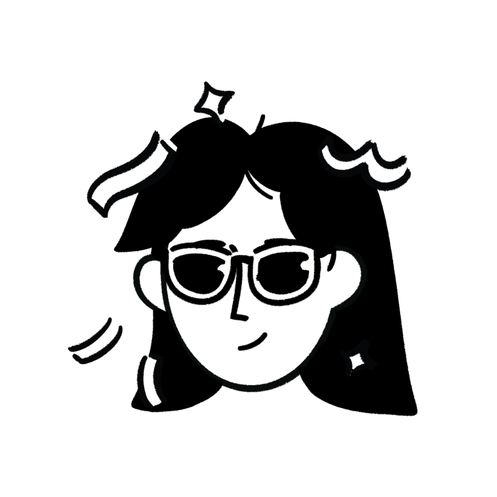
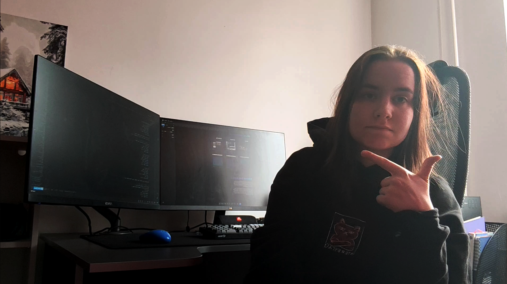
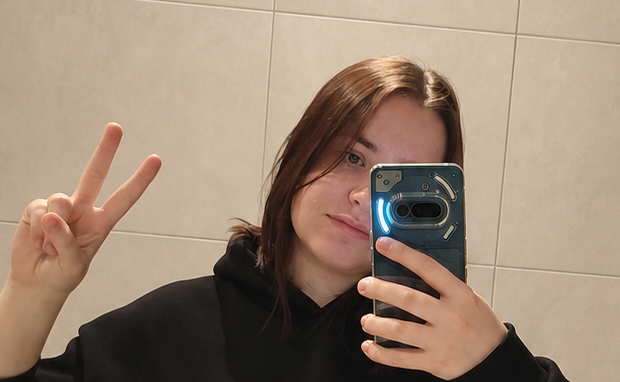
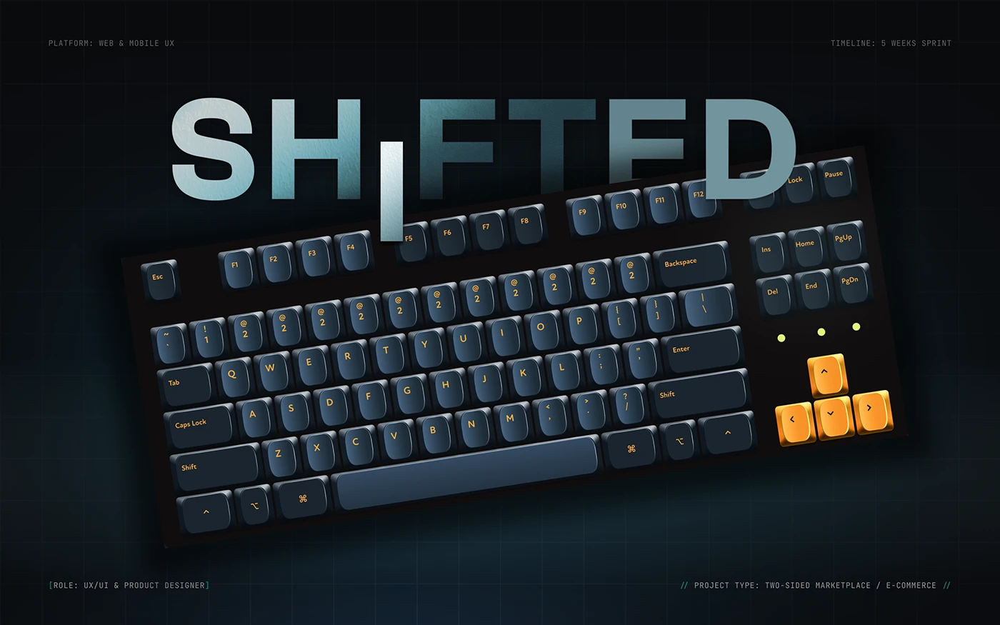

GAME / 2026
GAME / 2026
Kadence
От концепта велосипедного магазина до уютной сюжетной игры о буднях небольшой веломастерской.
Game designAI agentsHTML / CSS / JS
Смотреть кейс ↗
Портфолио · 2026
Product Designer и AI-assisted Creative Technologist. Проектирую интерфейсы, игры и цифровые продукты на стыке человеческой логики и новых инструментов.

Я лингвист и преподаватель двух иностранных языков, Team Coordinator в Azati и человек, который слишком долго смотрел на AI со стороны, чтобы не попробовать собрать с ним что-нибудь настоящее.
Сейчас я двигаюсь в сторону Product Design и исследую, как AI может помогать гуманитариям превращать идеи в продукты — без потери смысла, эмпатии и здравого скепсиса.
AI не снял с меня ответственность за продукт. Он просто помог мне добраться до той части работы, до которой раньше не хватало технических рук.


В UX/UI я пришла не через курсы и не через Figma-туториалы. Я пришла через наблюдение: почему один интерфейс хочется закрыть через три секунды, а в другом зависаешь надолго. Оказалось, дело не в «красиво». Дело в том, насколько легко человеку делать то, за чем он пришёл.
Я не люблю визуальный шум. Считаю, что у интерфейса должно быть пространство, воздух и характер. Когда между «хочу сделать» и «сделал» нет трения — вот тогда интерфейс работает. Моя цель — чтобы экран дышал, а пользователь получал бесшовный экспириенс.
Я всё ещё учусь. Но каждый проект для меня — это способ проверить гипотезу и стать чуть лучше, чем вчера. Не «я так вижу». А «давай проверим, сработает ли это».
Проекты, в которых мне было важно не только сделать красиво, но и понять, зачем это существует.
GAME / 2026
От концепта велосипедного магазина до уютной сюжетной игры о буднях небольшой веломастерской.

UI/UX / 2026UX/UI-кейс маркетплейса кастомных механических клавиатур с конфигуратором и проверкой совместимости.
Истории о создании продуктов, работе с AI и жизни гуманитария в IT.
 30 июля 2026
30 июля 2026
От концепт-дизайна велосипедного магазина до релизной web-игры на GitHub Pages — и почему документация оказалась важнее промптов.
Читать статью ↗Моя сильная сторона — соединять исследование, структуру, визуальное мышление и инструменты так, чтобы идея дошла до работающего прототипа.
Resource management, pre-sales support, client communication and team enablement. Я сопровождаю путь от профиля разработчика до клиентской презентации, собираю процессы в Confluence и Notion, а ещё создала Business English framework и провела 24+ language assessments.
Индивидуальные занятия для до девяти активных студентов одновременно: General, Conversational and Technical English. Помогала IT-специалистам преодолевать языковой барьер и увереннее чувствовать себя в англоязычной рабочей среде.
Координировала команду из шести человек, внедряла Google Workspace, поддерживала master data и табели, представляла команду во внешней коммуникации на русском и английском.
Yanka Kupala State University of Grodno · grade 9.6. Автор 35+ научных работ, участница startup competitions, hackathons and academic conferences. Thesis: The Pragmatic Aspect of Synonymic Series for the AI-Driven Visualization of Fictional Characters in English Literature.
Resource management, pre-sales support, client communication and team enablement. Я сопровождаю путь от профиля разработчика до клиентской презентации, собираю процессы в Confluence и Notion, а ещё создала Business English framework и провела 24+ language assessments.
Индивидуальные занятия для до девяти активных студентов одновременно: General, Conversational and Technical English. Помогала IT-специалистам преодолевать языковой барьер и увереннее чувствовать себя в англоязычной рабочей среде.
Координировала команду из шести человек, внедряла Google Workspace, поддерживала master data и табели, представляла команду во внешней коммуникации на русском и английском.
Yanka Kupala State University of Grodno · grade 9.6. Автор 35+ научных работ, участница startup competitions, hackathons and academic conferences. Thesis: The Pragmatic Aspect of Synonymic Series for the AI-Driven Visualization of Fictional Characters in English Literature.
До интерфейсов, игр и AI я много рисовала руками. И продолжаю: традишка, диджитал, фанарт — все это можно посмотреть в моем профиле на Artstation.
Открыта к предложениям, коллаборациям и просто интересным разговорам. Самый быстрый способ связаться — Telegram.
ОТКРЫТА К РАЗГОВОРУ